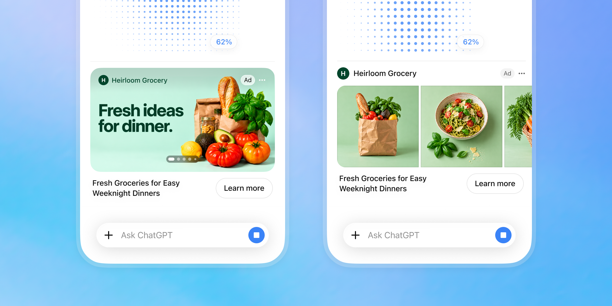
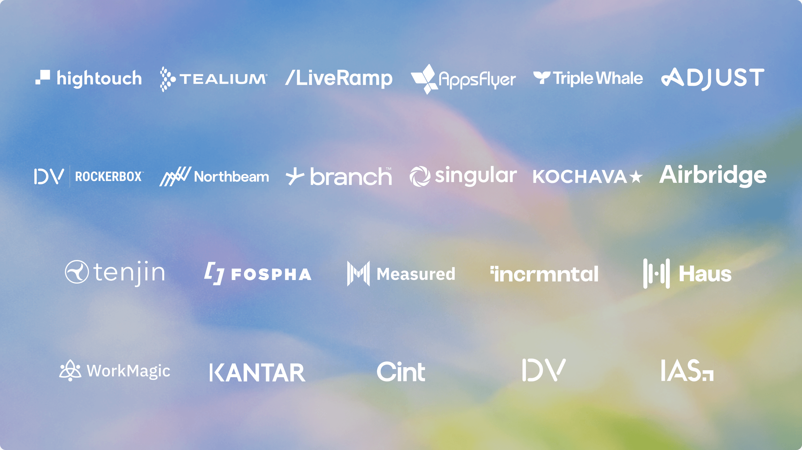

OpenAI's October 5, 2026 ChatGPT Ads update changed two things: a visual ad format, tested in the US, and a first set of third-party measurement partners. It did not change who sees ads or who can buy.
TL;DR
OpenAI published two posts on October 5, 2026: “Building advertising for the way people use AI” on the OpenAI blog, and “More ways to measure ChatGPT Ads” on the OpenAI Ads Blog. Together they add three things: a new ad format, a measurement partner ecosystem, and new brand suitability controls.
The new visual ad format appears while a user generates an image in ChatGPT. The ad uses images to show a product, how it is used, or the experience it makes possible. The test has three limits: it runs in the US, it reaches only users on the Free and Go plans, and it starts with an initial group of advertisers. In OpenAI's words:
“Testing will begin later this month in the US with an initial group of advertisers.”
— OpenAI blog, “Building advertising for the way people use AI”, October 5, 2026
Ads are labeled and kept separate from the image being created. The same post repeats a rule that applies to every ChatGPT ad format: “advertising does not influence the answers ChatGPT provides.”

Who should act on this now: categories that come up when people ask ChatGPT to make an image, such as home, apparel, travel or food, can start preparing image creative. Everyone else can wait. OpenAI has given no timeline for markets outside the US.
The measurement update connects ChatGPT Ads to tools advertisers already run. The Ads Blog calls it “our first set of third-party partners” across signals, attribution, incrementality and brand measurement. Three platforms (Hightouch, Tealium, LiveRamp) can now send conversion data from existing systems, and ten attribution partners cover web and app. The full list, grouped, is in the measurement section below.
Qualifying advertisers can now set Negative Phrases to keep ads out of conversation contexts that conflict with their own brand policies. DoubleVerify and Integral Ad Science (IAS) are running brand suitability evaluation pilots. They assess how OpenAI applies its safeguards in a controlled testing environment, without access to private user conversations.
Two things stayed the same on October 5: who sees ads, and who can buy them. The format and measurement news does not move either line. The table compares five dimensions before and after the update.
| Dimension | Before October 5 | From October 5 |
|---|---|---|
| Ad format | Text ad card below the answer | Adds visual ads during image generation. US test first, initial group of advertisers |
| Who sees ads | Free and Go users. No ads for Plus, Pro, Business or minors | Unchanged. Visual ads also Free and Go only |
| Where to buy | More than 60 countries since September 23. Self-serve list on the Help Center (captured 2026-10-13) | Unchanged |
| Measurement | Pixel, Conversions API, in-platform reports | First third-party partners: 3 data integrations, 10 attribution, incrementality and brand measurement |
| Brand safety | Platform safeguards, ad policies | Negative Phrases (qualifying advertisers). DoubleVerify and IAS evaluation pilots |
Sources: OpenAI blog and Ads Blog (2026-10-05), Help Center basics and availability pages. All captured 2026-10-13.
The next two sections take the unchanged items in turn: who can buy, then who sees ads.
Self-serve access to Ads Manager depends on one Help Center page, “Ads Manager Availability”. On October 13, 2026 it listed 63 markets, all marked Available. The page sets the rule in one sentence:
“To use self-service Ads Manager, the legal entity that will advertise and be billed must be based in a country listed as available below.”
— OpenAI Help Center, “Ads Manager Availability”, captured 2026-10-13
The test is the registration country of the legal entity that advertises and is billed. The October 5 posts did not change this page. Separately, OpenAI's September 23, 2026 expansion post says ChatGPT Ads is available in “more than 60 countries” after adding Indonesia, Malaysia, the Philippines, Singapore, Thailand, Vietnam and Taiwan.
OpenAI's page gives two routes. You can still sign up at ads.openai.com, and OpenAI says it will notify you when self-serve opens in your country. Larger advertisers with more complex needs can contact the OpenAI Ads team. The September 23 post also names access through the OpenAI Ads Solutions team, agency partners including dentsu, Havas Media, Omnicom Media, Publicis Groupe and WPP, and technology partners. Working through an agency is one of the routes OpenAI itself lists.
Visual ads and eligibility are separate questions. A new format in a US test does not change which entities can open a self-serve account. If you advertise from China into overseas markets, check where your advertising entity is registered against the country list before planning budget. That is the “getting ready” step in the TL;DR.
Ads show to users on the Free and Go plans. The Help Center page “Ads in ChatGPT: The Basics” says OpenAI does not show ads to users on Plus, Pro or any Business plan, or to accounts identified as belonging to users under 18. Visual ads follow the same rule: Free and Go only.
Both October 5 posts open with the same figure: “ChatGPT reaches 1.2 billion people each week.” That number counts all ChatGPT users. Paid tiers and minors see no ads, visual ads are limited to Free and Go users in a US test, and OpenAI has not published a reachable-audience number. Any audience size you see quoted for ChatGPT Ads is an estimate, not an OpenAI figure.
Standard ChatGPT ads appear below ChatGPT responses. Per the Help Center, each ad shows the advertiser name, favicon, title, copy, landing page and an image asset. The visual format adds a second placement, during image generation, for the US test group only.
The base layer is the ChatGPT Ads pixel or the Conversions API (CAPI). Per the Ads Blog, they measure actions such as purchases, leads, installs and sign-ups, and the same signals feed campaign optimization. Without a connected conversion event, there is nothing for reports or partners to read.
In reports, advertisers pick a click-through attribution window that fits their buying cycle, and can add a one-day view-through window that counts conversions after an impression without a click. OpenAI states the scope of these settings plainly:
“These settings control attribution in reports; they do not change how campaigns optimize.”
— OpenAI Ads Blog, “More ways to measure ChatGPT Ads”, October 5, 2026
OpenAI gives one data point for why view-through matters. In an early analysis of global campaigns optimized for deeper-funnel outcomes, 52.7% of eligible one-day view-through conversions occurred within an hour of the matched ad impression. The figure describes OpenAI's sample of global campaigns, not any single account. In practice, many people ask ChatGPT, then search the brand and buy without clicking the ad. Click-only reporting undercounts that path.
Each connected conversion event gets an Event Quality Score. EQS tells you whether the signal is good enough for measurement and optimization to work with. If the score is low, fix the data before adding budget. The Ads Blog does not call the attribution window, view-through or EQS new on October 5; it spells them out alongside the partner news.
| Group | Partners | Role |
|---|---|---|
| Data import (3) | Hightouch, Tealium, LiveRamp | Send conversion data from existing systems to ChatGPT Ads |
| Attribution (10) | AppsFlyer, Adjust, Branch, Singular, Kochava, Airbridge, Tenjin, Triple Whale, DV Rockerbox, Northbeam | Conversions API, reporting and click attribution across web and app |
| Incrementality and brand (early stage) | Haus, Measured, WorkMagic; Kantar, Cint | Geo-based experiments on causal impact; early testing on brand resonance metrics |
Source: OpenAI blog and Ads Blog, 2026-10-05, captured 2026-10-13.

For app and game teams, the attribution row matters most. AppsFlyer, Adjust, Branch and Singular are tools many of these teams already run, so ChatGPT Ads can now be judged with the same numbers used for every other channel.
OpenAI's posts cite results that measurement partners measured for specific advertisers. They show the effect can be measured. They do not show another account will get the same result.
Eight OpenAI announcements on ChatGPT Ads in 2026, by publish date. OpenAI's own posts only; press coverage is left out.
| Date | OpenAI post | What it covered |
|---|---|---|
| 2026-01-16 | Our approach to advertising and expanding access to ChatGPT | Ad principles and wider free access |
| 2026-02-09 | Testing ads in ChatGPT | Ads testing begins in ChatGPT |
| 2026-05-05 | New ways to buy ChatGPT ads | New ways to buy |
| 2026-08-18 | ChatGPT Ads expands across Europe | Expansion across Europe |
| 2026-08-31 | A milestone in expanding access to AI | Access milestone |
| 2026-09-16 | Reimagining advertising with AI | Advertising, reimagined with AI |
| 2026-09-23 | ChatGPT Ads expands to Southeast Asia and Taiwan | Six Southeast Asian markets and Taiwan; more than 60 countries |
| 2026-10-05 | Building advertising for the way people use AI; More ways to measure ChatGPT Ads | Visual ad format, measurement partners, brand suitability pilots |
Dates from the openai.com news feed and the ads.openai.com/blog index, captured 2026-10-13. The 02-09 date is the Ads Blog index date; the openai.com post with the same title shows 08-11.
Two things. Visual ads appear while a user generates an image, in a US test, for Free and Go users, with an initial group of advertisers. A first set of measurement partners went live: three data-import platforms, ten attribution partners, and early incrementality and brand measurement. Brand suitability gained Negative Phrases and two third-party evaluation pilots. Eligibility and ad audience did not change.
It depends on OpenAI's Help Center list of countries where Ads Manager self-serve is available, and that list did not change on October 5. If the advertising entity is registered in a listed country, it can sign up directly. If not, OpenAI says it can still sign up and be notified when self-serve opens, and larger advertisers can work through the OpenAI Ads Solutions team or agency partners.
OpenAI gave no timeline. The format is limited to the US, Free and Go users, and an initial group of advertisers.
Free and Go users. Plus, Pro, Business users and minors see no ads. Visual ads also reach Free and Go only.
The pixel or Conversions API is the base. In reports you choose a click-through attribution window and can add a one-day view-through window. Each connected conversion event gets an Event Quality Score (EQS). From October 5, Hightouch, Tealium and LiveRamp can import conversion data, and ten attribution partners including AppsFlyer, Adjust, Branch and Singular cover web and app.
No. Paid tiers and minors see no ads, and visual ads reach Free and Go only. OpenAI has not published a reachable-audience number.
Stan Lu · ChatGPT Ads · Going Global. I write explainers on official ChatGPT Ads updates, with sources split into OpenAI, coverage, and my own reading.
Series: ChatGPT Ads Update Explainer · 中文版
Published 2026-10-15 · Last updated: 2026-10-15